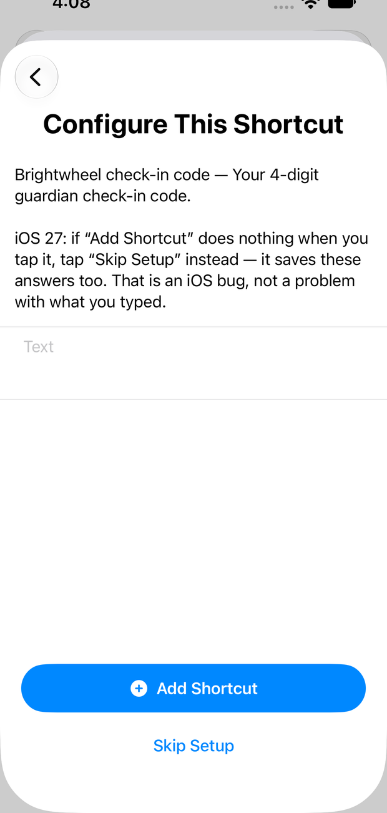
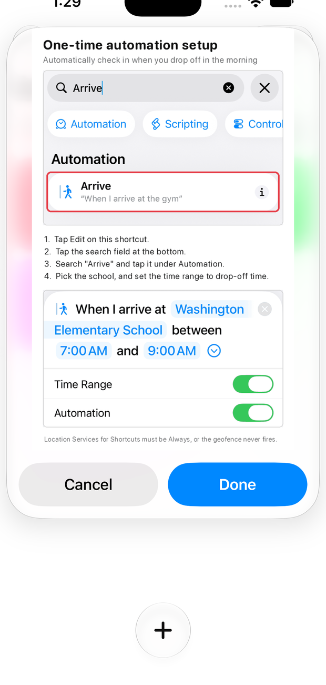

Three shortcuts that check your kids in and out of Brightwheel by themselves, while you are still parking.
Tap each one. Shortcuts opens and offers to add it.
Your email, your password, your 4-digit code.

Finish with Skip Setup, not Add Shortcut.
Add Shortcut does nothing at all on iOS 27. Skip Setup keeps everything you typed.
Check the first letter of your password.
The box capitalizes it, so hunter2 is saved as Hunter2 and signing in fails later.
Open Brightwheel Check In and run it by hand. It signs you in and scans the code by the door — neither can happen on its own.
Each shortcut shows you how the first time you run it. Use Arrive for both, on morning and afternoon times that do not overlap.

Set Location Services for Shortcuts to Always, or nothing ever fires.